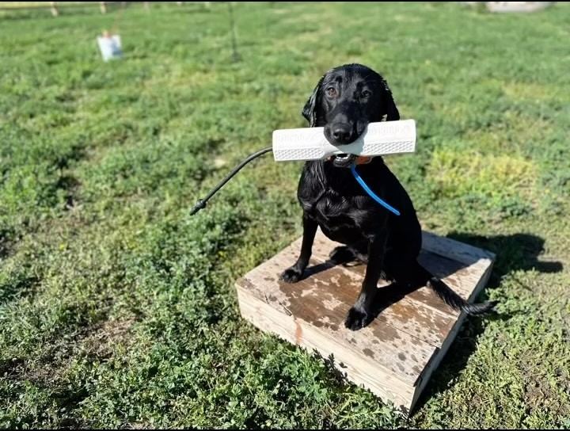

Episode 17 · November 08, 2023 · 1032
The New Gunner Bumper Review

About This Episode
In this episode I talk about the new bumper for Gunner kennels. If you have seen them online and wondering how they are, you might want to listen to this show
Questions about the training topics in this episode? Tyce works with bird dog owners and hunters through Utah Bird Dog Training. Reach out to work with him directly.
Resources & Links
- Utah Bird Dog Training — Tyce's professional training services.
Transcript
Full transcript for Episode 17: The New Gunner Bumper Review.
Tyce
Hey everyone, welcome to the Bird Dog Podcast. My name is Tyce. Today I want to give an honest review of the new Gunner Kennels training bumper. Gunner sent one over for me to test and I've been putting it through its paces, so here's what I think.
First, some context: the bumper we use most for hand-throwing at the kennel is the Avery Tangle Free hexagon rubber bumper. It's what I've benchmarked the Gunner bumper against. In pure throwing distance, the Gunner bumper went about 10–15 feet shorter than the Tangle Free bumper when I threw both as hard as I could at the same angle. That said, the Gunner bumper has a built-in interior cavity — there's a cap on one end that opens to a hollow space with vents running to the center. You can fill that space with small weights, rocks, or lead shot if you want to increase throwing distance. Even unweighted, the gap was close enough that it won't matter for most training situations.
The feature I find genuinely unique is the scent cavity. That same interior hollow is designed to hold bird feathers or wings. You cut them down to fit — maybe an inch or so — and slide them in through the vent openings. The dog can smell the scent through the vents while retrieving. No other bumper on the market lets you do this. There are spray-on bird scents available, but I've always wondered how accurately they replicate the real thing. With the Gunner bumper you can put actual pheasant wings, duck wings, chukar wings — whatever you're training for — directly inside the bumper. For dogs early in their training that you want to associate with real bird scent, or for conditioning a nose between seasons, this is a legitimate advantage.
The shape is 10.5 inches by 2.5 inches on the ends, tapering to about 1 inch in the center where the vents are. That tapered center naturally positions the dog to grip the middle of the bumper rather than crunching the ends — which is the correct carry position and good for building proper hold habits. The rubber handle is stiffer than a rope bumper, which means it stays extended rather than hanging straight down. When you reach for the bumper to take it from the dog, it's easier to grab. The hexagonal hole in the handle also lets you hang it on a nail or hook in your training area, which is a small thing but genuinely convenient. I've had bumpers slide off pegs and into the mud more times than I can count.
Overall assessment: the Gunner bumper is a well-designed product with a unique and genuinely useful feature in the scent cavity. I'd recommend it as a secondary bumper — use it during training sessions where you want scent exposure or when you're doing detail work on hold and carry. For pure volume throwing where you want to get a bumper as far as possible as fast as possible, something heavier may have an edge. But for all-around use, especially if you're introducing a dog to bird scent or working on those finishing details, it's a bumper worth having in your kit. Thanks for listening.
About the Host
Tyce Erickson
Tyce Erickson is a professional bird dog trainer and the owner of Utah Bird Dog Training in Utah. For nearly two decades he has worked with pointing dogs, retrievers, and family hunting dogs — helping owners build dogs that are capable and enjoyable in the field. The Bird Dog Podcast is an extension of that work: honest conversations on training, hunting, breeding, and everything that goes into a life spent working dogs.
More About Tyce